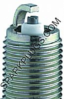
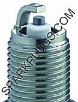

-
JWT told me they have had best results with using z32 NA plugs in my car. So that's what I went with. Gapped at .28. Think I might bring them down to .25. -
from Courtesy Parts..Jason84NA2T wrote: I don't think you can get the BCPR6E-11's anymore that are spec'd for turbo cars, but I've always run the ES-11's anyway.
SPARK PLUG (BCPR7ES 11) - VG30 - No Longer Available
SPARK PLUG (BCPR7E-11) - VG30T - turbo
I'm going to make order later this month and i was going to order few plugs too.
Pretty much every place else sels ES plugs. E are little more rare.
I still don't know the fysical dirrerences with those plugs :roll: . Picture might help :?Jukka Kivinen - Europe / Finland - '88 Turbo 2+2 Targa
Datsun Nissan Sports Cars of Finland
http://www.z31turbo.com / http://www.z31na.com -
[quote]Jason84NA2T wrote:I believe iridiums are gapped at .044 out of box, and they strongly advise NOT to re-gap iridiums, so I guess that's the reason for their spark issues. And I also believe iridiums are advertised to last 60K-70K miles, so I agree that's some good compromise. (if they last as advertisedOriginally posted by Andrevas )
)
EDIT:
BCPR6E-11 (v-power - $2.35)

http://ngk.com/results_cross.asp?pid=bc … &x=39&y=15
BCPR6ES-11 (traditional - $2.35)

http://ngk.com/results_cross.asp?pid=bcpr6es-11
BCPR6EIX-11 (iridium - $6.95)
http://ngk.com/results_cross.asp?pid=BC … &x=62&y=14
So, is BCPR6E-11 (v-power) suppose to be better or worse than BCPR6ES-11?Matte Black 86T - Sold -
[quote]simply86T wrote: [quote=Jason84NA2T]Originally posted by AndrevasIt is supposedly better for the flame kernell for the v to be there. This is supposed to help with blow out. I doubt anyone could tell the differencte though.Originally posted by Andrevas85 Z31 6.0 LSX turbo 766whp/792wtq
04 GTO, LS6, big cam, porting, N20… underway for summertime daily driver. -
I certainly didn't notice any difference when I tried them once I started having blowout issues. Only gapping them down helped.SATAN wrote: It is supposedly better for the flame kernell for the v to be there. This is supposed to help with blow out. I doubt anyone could tell the differencte though. -
[quote]Jason84NA2T wrote:Well, then, you did notice a difference only the difference sucked LOL :lol:Originally posted by SATAN85 Z31 6.0 LSX turbo 766whp/792wtq
04 GTO, LS6, big cam, porting, N20… underway for summertime daily driver. -
going to a colder plug will make less power, but you can add more timing so you can increase power. You want to find that happy heat range for your particul;ar setup. We run an 11 heat range on the race car, but it is 10.5:1 CR and runs 44psi on top of that using VP import (125+ octane) for fuel.86 hardtop shell, 93 SC300 engine, 95 soarer bellhousing, 91 supra transmission, 95 Q45 differential hubs and driver's side axle, 1992 300ZX turbo driver side axle and calipers, 2004 350Z Rotors, 87 300ZX front end/hood, 1999 Viper radiator, 1992 Mustang throttle body. Lots of glue and tape to keep it all together. -
Hey StreetFighter, What is the hex size on that 11 heat range plug you are talking about? I'm looking for a 9 NGK heat range but can only find I think up to an 8 for the 5/8" hex. Everything else is an 11/16". You got any leeds? Do they use NGK in the race car you are talking about?StreetFighter wrote: going to a colder plug will make less power, but you can add more timing so you can increase power. You want to find that happy heat range for your particul;ar setup. We run an 11 heat range on the race car, but it is 10.5:1 CR and runs 44psi on top of that using VP import (125+ octane) for fuel.
Also, why does a colder plug make less power? I know a colder plug pulls heat out of the chamber faster but I cant imagine how that would result in less power. Got any insite on that?85 Z31 6.0 LSX turbo 766whp/792wtq
04 GTO, LS6, big cam, porting, N20… underway for summertime daily driver. -
anybody had any luck with ngk platinums. just got some off ebay and will be trying them in a few weeks when i get done with my turbo conversion.
http://cgi.ebay.com/ebaymotors/ws/eBayI … 330&rd=1,1Bolt on, fast, z31. You can only pick two.
Old weaksauce numbers: 391hp/433tq


Copyright © 2006–. All rights reserved. Privacy Policy